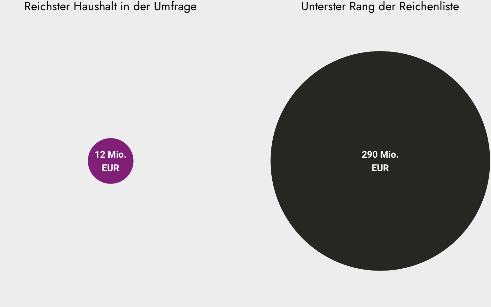
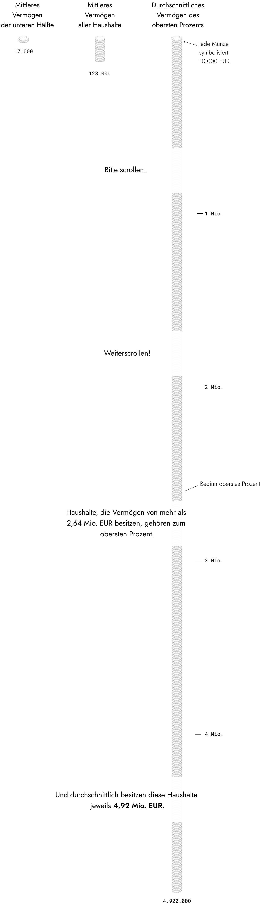

Wem gehört der Wohlstand in Österreich?
Österreich gilt als reiches Land. Doch wie genau ist dieser Reichtum verteilt? Wer besitzt wie viel, und wo beginnt die Spitze der Vermögensverteilung?
Lange Zeit fehlten verlässliche Daten, um das Vermögen der Privathaushalte zu messen. Das änderte sich mit dem Household Finance and Consumption Survey (HFCS). Diese europaweite Erhebung der Zentralbanken liefert erstmals detaillierte Einblicke in die Finanzen der Haushalte.
Doch inwieweit ermöglichen solche Umfragen, die Vermögensverteilung akkurat abzubilden? Besonders an der Spitze ist Reichtum oft schwer zu fassen. Um herauszufinden, ob die offiziellen Zahlen das wahre Ausmaß der Ungleichheit abbilden, muss man über die Befragungen hinausblicken.
Diese interaktive Auswertung nimmt dich mit auf eine Spurensuche: Wir betrachten zuerst die Erkenntnisse aus dem HFCS und untersuchen dann, wie die „blinden Flecken” der Statistik ausgeleuchtet werden können.
Als nächstes vergleichen wir…
- das mittlere Vermögen der unteren Hälfte der Haushalte
- das mittlere Vermögen aller Haushalte und
- das durchschnittliche Vermögen des obersten Prozents.
Mit dem mittleren Vermögen ist das Vermögen jenes Haushalts gemeint, der sich – nachdem alle Haushalte nach ihrem Vermögen sortiert wurden – genau in der Mitte befindet.

Wie teilt sich das Vermögen der privaten Haushalte in Österreich auf?
Was sind die Gründe für die Untererfassung vermögender Haushalte?
Für die HFCS-Erhebung wird eine Stichprobe von Haushalten in Österreich befragt. Eine ideale Stichprobe repräsentiert Haushalte verschiedener Gruppen gleichmäßig und erlaubt valide Aussagen über die Grundgesamtheit, also die privaten Haushalte in Österreich.
Beim HFCS sind jedoch wohlhabendere Haushalte unterrepräsentiert.
Es gibt drei Hauptgründe, warum das Gesamtvermögen und die Ungleichheit in einer Gesellschaft in Umfragen meist zu niedrig eingeschätzt werden:
Wie kann man sich der tatsächlichen Vermögensverteilung annähern?
Um ein realistisches Gesamtbild zu zeichnen, können die Befragungsdaten anhand der trend.-Reichstenliste ergänzt werden. Dieses Verfahren macht jene Vermögen sichtbar, die in der Haushaltsbefragung sonst unterrepräsentiert bleiben.
Zwischen dem Vermögen des reichsten Haushalts der Umfrage (ca. 12 Mio. Euro) und dem Vermögen auf dem untersten Rang der Reichstenliste (290 Mio. Euro) klafft ein riesiges Loch.
Mithilfe der Pareto-Verteilung lässt sich mathematisch herleiten, wie sich das Vermögen in der Gruppe der sehr Reichen wahrscheinlich verteilt. Das Modell erlaubt es, die statistische Lücke zwischen der breiten Bevölkerung und den Superreichen präzise zu schließen, indem es die Anzahl und den Reichtum jener Haushalte schätzt, die von herkömmlichen Umfragen nicht erfasst werden.
Ab einer Grenze von vier Millionen Euro werden die Befragungswerte durch statistisch modellierte Haushalte ersetzt. Ziel ist es, die tatsächliche Konzentration am oberen Rand der Verteilung in Österreich realitätsgetreu abzubilden.
Damit statistische Ausreißer das Ergebnis nicht künstlich aufblähen, wurde eine Obergrenze eingezogen: Vermögenswerte werden bei zehn Milliarden Euro gedeckelt. Selbst wenn das mathematische Modell theoretisch noch höhere Extremwerte zulassen würde, stellt dieser „Deckel” sicher, dass das Gesamtbild nicht durch einzelne Schätzwerte verzerrt wird.
Nach dieser statistischen Anpassung zeigt sich ein genaueres Bild der der Vermögen in der Spitze.
Die Vermögensverteilung in Österreich stellt sich nun wie folgt dar:
Erst der Blick hinter die statistischen Lücken zeigt: Reichtum ist in Österreich weit konzentrierter, als es einfache Umfragen vermuten lassen. Diese Transparenz ist die notwendige Grundlage für jede sachliche Debatte darüber, wie Wohlstand und Verantwortung in Zukunft verteilt sein sollen.
Quellen
Die hier dargestellten Erkenntnisse und Verteilungen basieren auf der Arbeit von Ines Heck, Anna Hornykewycz, Jakob Kapeller und Rafael Wildauer (2024): Vermögensverteilung in Österreich: Eine Analyse auf Basis des HFCS 2021/22. In: Materialien zu Wirtschaft und Gesellschaft Nr. 255. Working Paper-Reihe der AK Wien.
Weitere Quellen
- Isotypen: Gerd Arntz Web Archive: https://www.gerdarntz.org/isotype.html, digital bearbeitet
- Bundeszentrale für politische Bildung: https://www.bpb.de/kurz-knapp/lexika/lexikon-der-wirtschaft/21004/vermoegen/
- Household Finance and Consumption Survey 2021: https://www.hfcs.at/ergebnisse-tabellen/hfcs-2021.html, Standard-Output-Tabellen (Download)
- Statistik Austria: https://www.statistik.at/statistiken/bevoelkerung-und-soziales/bevoelkerung/familien-haushalte-lebensformen/privathaushalte
 Ansgar Wolsing, Februar 2026
Ansgar Wolsing, Februar 2026